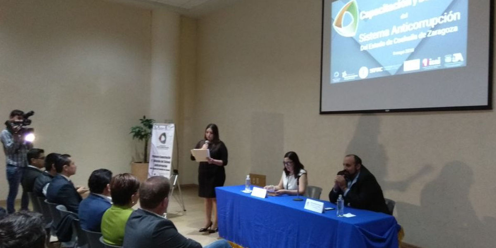
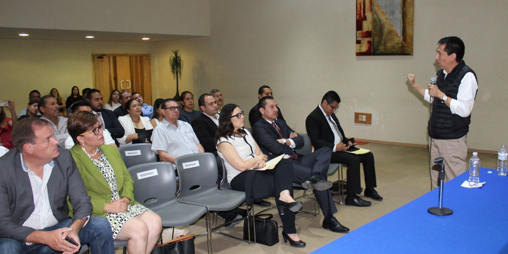
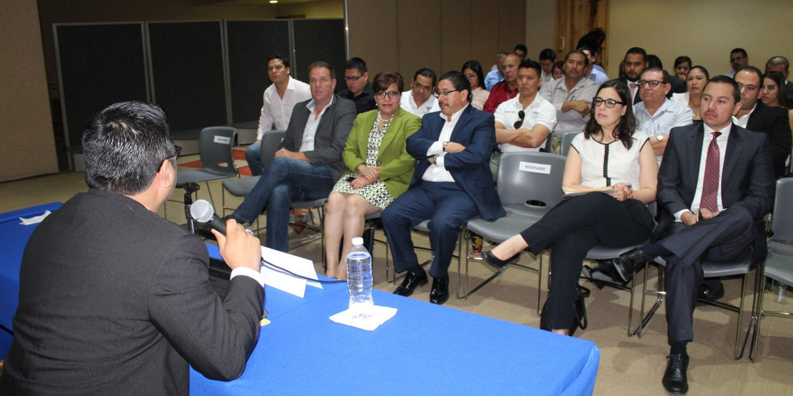

Sistema Anticorrupción del Estado realiza Taller para funcionarios públicos de la Región Laguna
Torreón, Coahuila de Zaragoza a 9 de mayo de 2018.
Con la participación de ponentes de las instancias que conforman el Comité Coordinador del Sistema Anticorrupción del Estado de Coahuila de Zaragoza, se llevó a cabo el primer taller de capacitación y difusión del sistema, dirigido a funcionarios públicos de instancias estatales y municipales de la Región Laguna.

La primera ponencia estuvo a cargo del Presidente del Consejo de Participación Ciudadana de Coahuila, MaestroJosé Manuel Gil Navarro, quien hablo de la conformación, composición y funcionamiento del Sistema Anticorrupción en el Estado.
En su intervención el Consejero Presidente explicó como se esta construyendo, de forma coordinada con las dependencias que conforman el Comité Coordinador y las organizaciones de la sociedad civil, las medidas y acciones para prevenir y combatir la corrupción en la entidad.
Por parte del Consejo de la Judicatura del Poder Judicial del Estado, intervino durante el taller el Lic.Ángel Gabriel Hernández Guzmán, Secretario Auxiliar de la Unidad de Derechos Humanos e Igualdad de Genero del Poder Judicial del Estado.
También se contó con la participación del Mtro. Juan Carlos Cisneros Ruiz, titular de la unidad anticorrupción del Tribunal de Justicia Administrativa, como además del Lic. Luis Edgar Martínez Cruz, director de asuntos jurídicos de la Auditoria Superior del Estado.
Para cerrar el taller intervino el Lic. Gerardo Alfonso Zavala de la Peña, Agente del Ministerio Público de la Fiscalía Especializada en Delitos por Hechos de Corrupción del Estado y el Lic. Reynaldo Rosas Cepeda, Director de Protección de Datos Personales del Instituto Coahuilense de Acceso a la Información Pública.
El evento se realizó en la Infoteca de la Universidad Autónoma de Coahuila Unidad Torreón y se contó con la presencia de los Consejeros Lourdes de Koster López, Adolfo Von Bertrab Saracho y Carlos Rangel Orona, así como la Secretaria Técnica de la Secretaría Ejecutiva, Marcela Castañeda Agüero.

